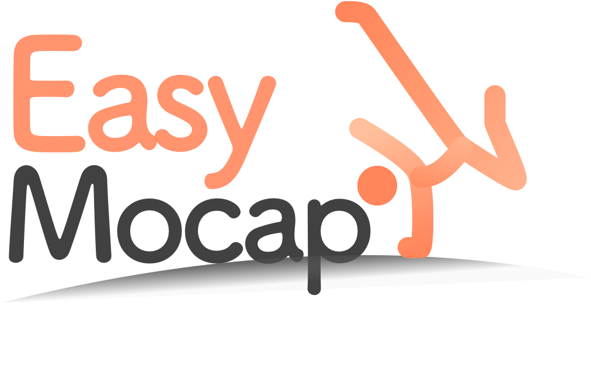

BiographyI graduated from the department of Computer Science (CAD&CG State Key Lab) at Zhejiang University with a master degree in 2022, advised by Prof. Xiaowei Zhou. Before that, I obtained my bachelor degree at Zhejiang University in 2019. My research focuses on character animation and human reconstruction (Demos). |
Publications
|
TELA: Text to Layer-wise 3D Clothed Human Generation
Junting Dong, Qi Fang, Zehuan Huang, Xudong Xu, Jingbo Wang, Sida Peng, Bo Dai ECCV 2024 Project Paper |
|
|
Capturing Closely Interacted Two-Person Motions with Reaction Priors
Qi Fang, Yinghui Fan, Yanjun Li, Junting Dong, Dingwei Wu, Weidong Zhang, Kang Chen CVPR 2024 Project Paper |
|
|
iVS-Net: Learning Human View Synthesis from Internet Videos
Junting Dong, Qi Fang, Tianshuo Yang, Qing Shuai, Chengyu Qiao, Sida Peng ICCV 2023 Paper |
|
|
Learning Analytical Posterior Probability for Human Mesh Recovery
Qi Fang, Kang Chen, Yinghui Fan, Qing Shuai, Jiefeng Li, Weidong Zhang CVPR 2023 Project Paper |
|
|
TotalSelfScan: Learning Full-body Avatars from Self-Portrait Videos of Faces, Hands, and Bodies
Junting Dong*, Qi Fang*, Yudong Guo, Sida Peng, Qing Shuai, Hujun Bao, Xiaowei Zhou NeurIPS 2022 (* equal contribution) Project Paper |
|
|
Novel View Synthesis of Human Interactions From Sparse Multi-view Videos
Qing Shuai, Chen Geng, Qi Fang, Sida Peng, Wenhao Shen, Xiaowei Zhou, Hujun Bao SIGGRAPH 2022 Project Paper |
|
|
QuickPose: Real-time Multi-view Multi-person Pose Estimation in Crowded Scenes
Zhize Zhou, Qing Shuai, Yize Wang, Qi Fang, Xiaopeng Ji, Fashuai Li, Hujun Bao, Xiaowei Zhou SIGGRAPH 2022 Paper |
|
|
Reconstructing 3D Human Pose by Watching Humans in the Mirror
Qi Fang*, Qing Shuai*, Junting Dong, Hujun Bao, Xiaowei Zhou CVPR 2021 Oral (4%) (* equal contribution) Project Paper |
|
|
Fast and Robust Multi-Person 3D Pose Estimation and Tracking from Multiple Views
Junting Dong, Qi Fang, Wen Jiang, Yurou Yang, Qixing Huang, Hujun Bao, Xiaowei Zhou T-PAMI 2021 Project Paper |
|
|
SMAP: Single-Shot Multi-Person Absolute 3D Pose Estimation
Jianan Zhen*, Qi Fang*, Jiaming Sun, Wentao Liu, Wei Jiang, Hujun Bao, Xiaowei Zhou ECCV 2020 (* equal contribution) Project Paper |
Projects
|  |
EasyMocap: Markerless Human Motion Capture and Novel View Synthesis from RGB Videos
CCF CAD&CG 2021 Excellent Software Project |